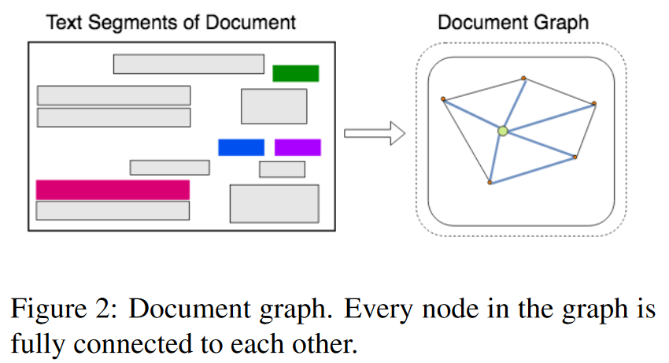
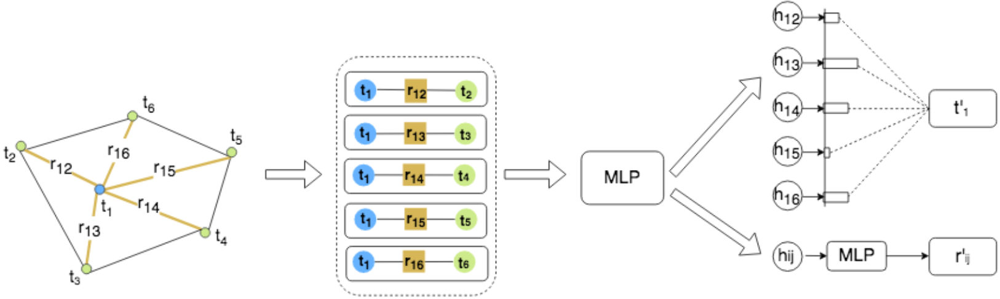
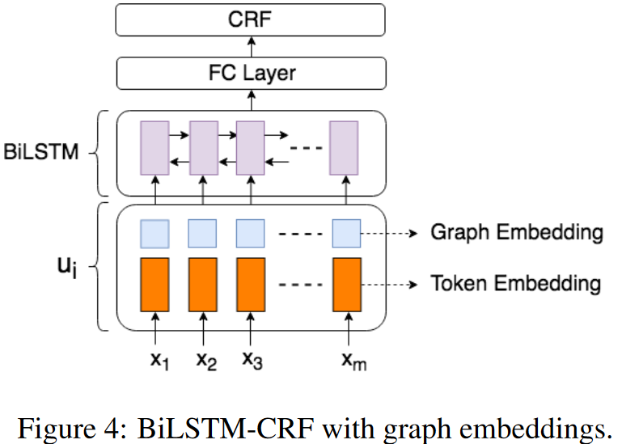
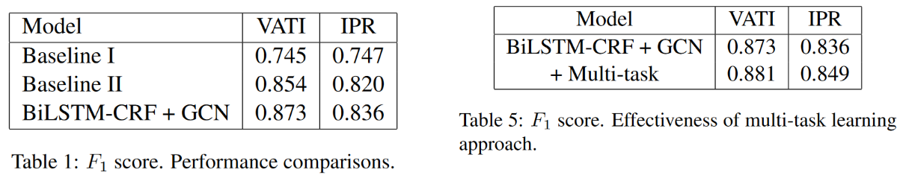

Graph Convolution for Multimodal Information Extraction from Visually Rich Documents
完成时间：2023-04-02
来自：NAACL 2019
题目：《利用图卷积网络从富文档中提取多模态信息》
代码未开源，论文地址：https://arxiv.org/abs/1903.11279
提出了一种基于图卷积的方法来结合VRD中呈现的文本和视觉信息。图卷积生成的图嵌入概括了文档中文本段的上下文，并进一步结合文本嵌入使用标准的BiLSTM - CRF模型进行实体抽取。
创新点：
利用图卷积网络整合文档的文本语义信息和视觉语义信息；这里的视觉语义信息，主要指文档版面以及文本相对位置，而非图像信息
一、Motivation
在VRDs中，视觉和布局信息对于文档理解至关重要，这类文档中的文本无法序列化为一维序列而不丢失信息。经典的信息抽取模型如BiLSTM - CRF通常针对文本序列进行操作，并没有融入视觉特征。
二、Contribution
本文提出了一种从VRD中提取IE的新方法：利用图卷积计算文档中每个文本段的图嵌入。图嵌入表示当前文本段的上下文，其中卷积操作结合了上下文的文本和视觉特征。然后将图嵌入和文本嵌入结合，输入到一个标准的BiLSTM中进行信息提取。
三、Methodology
（一）、文档建模
将每个文档建模为一个文本段图，其中每个文本段由段的位置和段内的文本组成。图由表示文本片段的节点和表示两个节点之间的相对形状和距离等视觉依赖关系的边组成，使用内部的OCR系统生成文本片段。

（二）、特征提取
使用单层的BiLSTM计算嵌入，从段内文本内容中提取特征；另外，使用边缘嵌入来编码两个片段之间的视觉距离、源节点的形状和目的节点的相对大小等信息。
即：节点嵌入编码文本特征，而边嵌入主要表示视觉特征。
（三）、图卷积方法

1. 使用三元组的优点：首先，它将视觉特征直接融合到近邻表示中。此外，当前节点的信息被跨邻居复制。因此，邻居特征可以潜在地学习给定当前节点的位置
2. 图卷积是基于自注意力机制定义的，其思想是通过关注每个节点的邻居来计算每个节点的输出隐藏表示
（四）、BiLSTM-CRF方法

四、Experiment
